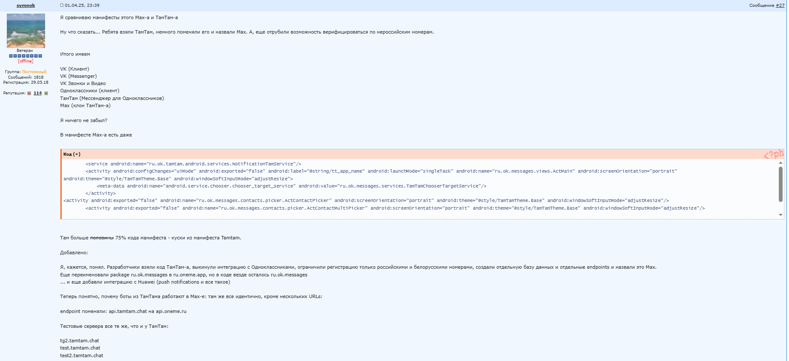

Не прошло и месяца с момента широкого анонса национального мессенджера MAX, как к нему начали возникать вполне конкретные и обоснованные претензии.
Вместо обещанного отечественного прорыва мы получили слегка переделанный мессенджер «ТамТам» с минимальными доработками и внушительным набором проблем.
Ключевые претензии к продукту:
1)Это клон провального мессенджера ТамТам:https://4pda.to/forum/index.php?showtopic=1104314&view=findpost&p=136202814
2)MAX собирает и хранит метаданные: IP-адреса, контакты, время активности.
Эти данные могут передаваться третьим лицам. Дополнительно часть информации уходит на зарубежные серверы.
3)В мессенджере используются сторонние библиотеки, разработанные в США, Польше и на т.н. Украине.
В частности, одна из ключевых библиотек создана разработчиками из Днепра. Учитывая, что MAX позиционируется как платформа для интеграции с Госуслугами и банковскими сервисами, такой подход — это потенциальная угроза безопасности.
4)Мессенджер интегрирован с Google Firebase Cloud Messaging — зарубежной push-инфраструктурой, которая технически неизбежно передает определённые данные, о чем создатели MAX предпочитают не говорить.
5)MAX запрашивает полный доступ к буферу обмена и собирает данные о всех установленных приложениях на Android — это избыточный объем собираемой информации для мессенджера, который изначально заявлялся как безопасный.
6)В целом, проблема глубже, чем просто недоработанный продукт. Ошибка — в самой концепции.
Нельзя строить цифровой суверенитет, пытаясь создать один «правильный» мессенджер на все случаи жизни, особенно когда этот мессенджер еще и привязывают к Госуслугам.
В нормальной экосистеме пользователи должны иметь выбор между разными продуктами с разными фокусами: одни лучше для повседневного общения, другие — для рабочих задач, третьи — для защищенной переписки.
Конкуренция между разработчиками — это главный стимул для повышения качества и безопасности сервисов. ️
Когда все «яйца» сложены в одну корзину и пытаются объединить в одном мессенджере школьные чаты, банковские операции и якобы секретные переписки — получаются такие же сырые и уязвимые решения, как MAX.
Развитие цифровой среды требует работы с разными командами и поддержания конкуренции.
В противном случае — рискуем получить очередной монополизированный продукт, который не выдержит элементарной проверки на устойчивость и моментально потеряет доверие пользователей.
Также рекомендую прочитать ещё и это:Национальный мессенджер как шаг к цифровому рабству